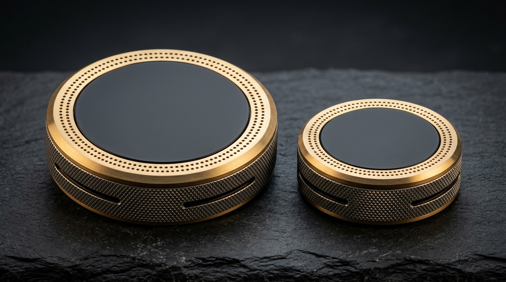

Complete 3D print files and slicer settings for the Full-Size 3.0" Puck Enclosure and Compact 2.0" Mini Puck Enclosure.

PETG-CF) or Matte-Black ASA / ASA-CF (e.g., Bambu Lab PETG-CF Black or Polymaker Fiberon PETG-CF).150°F+ (standard PLA softens at 130°F). PETG-CF and ASA handle 175°F–200°F, have high impact resistance, and hide 100% of layer lines with a dead-matte carbon finish.0.4 mm Hardened Steel Nozzle.| Setting | Recommended Value | Reason |
|---|---|---|
| Part Orientation | • Bottom Cup: Flat on base (cavity UP) • Top Cap: Flat on outer face (plug ring UP) |
Printing the Top Cap face-down on a Smooth PEI or fine Matte PEI plate makes the front face look injection-molded with zero top-layer lines. |
| Supports | Disabled (None) |
All 45° chamfers and diamond knurls are 100% self-supporting. |
| Layer Height | 0.16 mm (Optimal) or 0.20 mm |
Crisp diamond knurling and clean snap-ledge tolerance. |
| Wall Loops / Perimeters | 5 Walls (2.0 mm solid wall) |
Heavy-duty impact strength for locker rooms and gear bags. |
| Top / Bottom Shell Layers | 5 Top / 5 Bottom |
Solid floor and faceplate rigidity. |
| Sparse Infill | 35% – 40% Gyroid |
Isotropic crush resistance from all angles. |
| Seam Position | Random on Cup / Aligned on Cap |
Random hides the Z-seam completely inside the diamond knurling teeth. |
| First Layer Speed (Top Cap) | 35 mm/s + Arachne Wall Generator |
Keeps the 18 small 1.7 mm vent holes crisp and round on Layer 1. |
~48–52 minutes • Uses ~50g of filament (19–20 full-size pucks per 1 kg spool).9x Bottom Cups on Plate 1 (~4.5 hrs overnight) and 9x Top Caps on Plate 2 (~1.5 hrs).~24 minutes • Uses ~22g of filament (44 mini pucks per 1 kg spool).